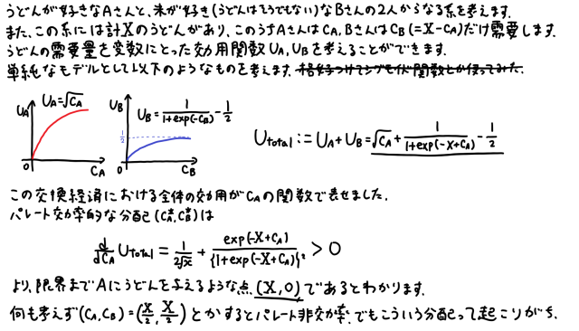

世界は変わりつつあります。というか、常に著しく変化し続けています。
「VUCA時代」という言葉を聞いたことがあるでしょうか。これはVolatility(変動性),Uncertainty(不確実性),Complexity(複雑性),Ambiguity(曖昧性)の頭文字を取って作られた言葉です。
将来の予測が困難である現代を象徴する言葉として2010年代からよく使われていたそうですが、近年ますますこの傾向が強まっています。
そりゃだってそうですよね。グラボは高騰するし、ファミチキは品薄になりました(12月14日より通常販売)。あと、最近吉野家の牛丼も値上がりしたそうですね。誰がこんな世界を予想できたでしょうか？別にこんな馬鹿みたいなものじゃなくてもいくらでも事例はあります。
これだけ激しく変化する世の中で、私たちは生きていかなければいけません。そして、学者や政府はそんな私たちを少しでも救いたい。どうすればいいのでしょうか。
経済学は、一つの強力な手段です。
本当はここから大層なことを書き始めようと思ったのですが、手を動かしてみたら何も思いつかなかったので、私の浅い知見で何とか間を持たせます。
以下の内容は全てフィクションです。実在の食品や企業を貶める意図は一切ございません。
何かしらの原因で、突如としてうどんの供給量が著しく減少したとしましょう。この現象をウドン・ショックと呼称します。香川県民は悶え苦しみ、貨幣同等に扱われていた丸亀製麺のうどん券は紙屑になってしまいます。(→追記1)
うどんの供給量が減ったのに、食べたい人は膨大にいる。超過需要の状態です。この時うどん市場では何が起こるでしょうか。
極めて有名な価格メカニズム──需要と供給の釣り合う点で均衡価格が決定される。これに沿って考えてみましょう。
上図の赤い線で表されているのが需要曲線、消費者サイドです。一方青の線が供給曲線、生産者・販売者サイドです。色が薄いのは通常時、濃いのはウドン・ショック後のものです。
生産者・販売者は供給量の減少による損失を単価を釣り上げることで解消しようとします。従って供給曲線は右へ移動します。一方で、ウドン・ショックの前後で生産者のうどん食べたい欲は変わらない(厳密に見れば、駆け込み需要などが考えられるが捨象する)から需要曲線は移動しません。
二つの交点──即ち均衡価格──はどうなるでしょうか。グラフから明らかなように、上昇します。直感からも明らかなように、うどんの著しい値上がりが発生します。未曾有の大災害です。
ここまではありきたりな経済学の初歩的な話。ここからもう一歩踏み出します。
では、価格が上がってしまって、これは嬉しいのでしょうか？私たち消費者はうどんを食べるためにより多くの金額を支払わなければいけなくなり、丸亀製麺は旨いうどんを安価で提供するという企業イメージを失います。
誰も幸せになりませんよね？でもこれって誰も悪くないんですよ。例えば国民が一斉蜂起してウドン・ショックの責任を丸亀製麺に押し付けてして、結果価格が下がったとしたら消費者は嬉しいです。でもこれって正しくないですよね。
だって丸亀製麺は何も悪くない。
それに、株式会社丸亀製麺の社員数は823人、パート数は22562人(1)。この中には家庭を支えている人間もいる。その家庭が謂れのない理由で苦しめられるのは道理に合わない。
今しがた「正しくない」という言葉を使った。極めて直感的で感情的な言葉であるが、その「正しさ」とは一体全体何で、誰が社会を「正しく」するのでしょうか。
解釈の数だけ答えはありますが、私の考えを述べます。正しさとは社会全体の効用が最大化されることであります。二つ目の問の答えは後に取っておきましょう。
さて効用なるものが出てきましたね。これはミクロ経済学の基本概念であり極めて重要です。どういうものかというと個人の選好関係、AよりもBが好き等、を数値化したものです。効用が大きい状態はそのまま幸せと対応します。
各人の効用の総和をとることで社会全体の幸福度がわかるわけです。これが最大化されるのが正しい状態です。
さて私はこれまで殊更にうどんを取り上げ、全世界の人間がうどんを愛しているかのように書いてきましたがそれは間違いですよね。うどんよりも米が好きな人だっている。
うどんよりも米が好きな人って、仮に高騰したうどんを与えられても別段嬉しくないんですよ。きっとメルカリに出品するでしょうね(2)。逆に、この人からうどんを取り上げてうどんが好きな人に与えたとしたら？米が好きな人はうどんを奪われてもある程度はノーダメージ、大して与えられた方は大喜び。併せると効用は増加しますよね。こうして分配を調節することでやがて効用最大(またはパレート効率とも言う)に至る事ができます。正しさに至るには適切な分配が必要です。
以下は、簡単なモデルを用いて効用最大化問題を解いたものです。ただし、メルカリは存在しないものとしました。

(貨幣の概念を導入してうどんの限界代替率とかを考えればメルカリ有りの効用最大化問題も解ける...？)
以上の話についてこう思った方はいませんか？うどんの分配だ何だと取り立てて言ってるけど、別にうどんが食べたい人は勝手に丸亀製麺に行くし、そうでもない人は勝手にうどんを食べないでいるじゃないかと。別にそんな詳細な理論を追わなくたって社会全体で勝手に分配の最適化が行われているのではないかと、そう思った方いるんじゃないでしょうか。その通りです。市場のパラメータは勝手に調整され、社会は勝手にパレート効率に至ります。先述の単純かつ巧妙な価格メカニズムの元で。
これが、アダム・スミスが「見えざる手」と呼んだものの正体です。
先の問への解答の形で書き改めます。社会は「見えざる手」によって正しくなります。効用最大化のために各経済主体が意識的に何かをしなければならないことはそうはないです(3)。
さて、最後の話です。見えざる手の力が弱まることはそうはありません。でもあります。国民が丸亀製麺に対し反乱を起こした時です。丸亀製麺側が一方的に不幸を被り、パレート非効率的になってしまいます。
...こんなふざけた例じゃなくて他にもちゃんとしたものがあります。独占市場における価格の釣り上げはいい例です。独自性を盾にした消費者からの搾取行為です。では、こういったイレギュラーにはどう対応するのでしょうか。
というところに政府の登場です。前者に大しては威力業務妨害、後者に大しては独占禁止法といった法律で取り締まることができます。他にも特定の事業に対し補助金を出すことなんかもできます(GoToキャンペーンってまさにこれです)。政府が経済・社会に対して行えることは膨大にあります。政府の役割の一つは見えざる手を支えることにあると言えます。何かの拍子に狂ってしまった社会を正しい状態に戻す、その手助けです。
ではそのようなイレギュラーはいつ起こるのでしょうか？いつでも起こり得ます。VUCA時代の今ならば。マスクの需要が急激に高まった時のことを思い出してください。誰もが予想だにしないタイミングで天変地異が起こりました。あの場におよそ正常な価格メカニズムなんてものは存在しませんでした。
ここに私たちが経済学を学ぶ理由があります。放っておけば正常に動作するはずの社会が急にエラーを吐いてしまった時、私たちはどう行動するべきなのか。政府はどう行動するべきなのか。ただのうのうと暮らしているだけではいつか取り返しのつかない事態になる。
波乱の時代と経済学。今後の人生のために、経済学を学んでみませんか？
追記1：
ウドン・ショックによって丸亀製麺のうどん券は紙屑になってしまうみたいなこと書きましたが、枚数さえ揃えばうどんを無料で食べられるうどん券は逆に価値がハイパーインフレしますね。
社会全体でその価値が共通認識となれば、きっといずれ信用貨幣としての役割を果たすことでしょう。(と言っても一か月という有効期限があるので貨幣価値は無に等しいですね)
ここでは価格とか需給とかについて述べましたが、貨幣や金融というのも経済学の中の面白い分野です。
追記2：
これを書いていたらすごくミクロ経済学を勉強したくなった。下で挙げられている参考文献で輪読をやりたい。冬休みあたりで。
(1)
https://www.toridoll.com/company/profile-marugame.phpを参照。尚、数字は2020年3月31日現在のものである。
(2)
メルカリに食品を出品する際には注意が必要である。詳細はhttps://jp-news.mercari.com/articles/2019/03/26/item-rule-food/を参照のこと。
(3)
もちろんこれは理想化された状況下での話である。実際は何かしらの原因(人間の非合理性、情報の偏在性等)で社会は必ずパレート非効率的になってしまい、必ず誰かが損をする。悲しいね。
以下の本を参考にした。
奥野正寛、鈴村興太郎 (1988). ミクロ経済学I, モダン・エコノミックス